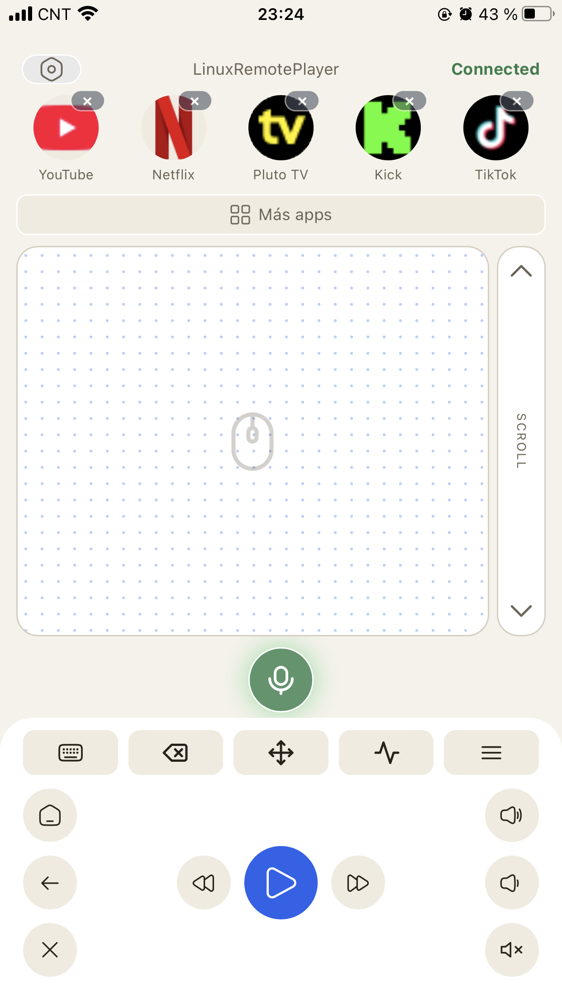
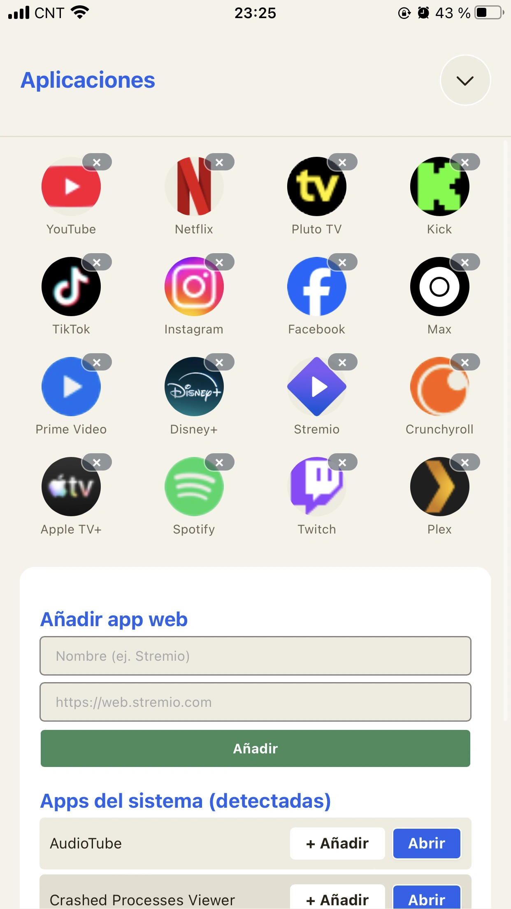

Turn your PC into a Smart TV controlled from your phone.
LRP OS is a Debian ISO that boots straight into a media center. Your phone is the remote: touchpad, keyboard, apps and search. No cloud, no accounts, no license and no telemetry.
Every release publishes the ISO together with SHA256SUMS to verify the download.

Your PC as a TV, your phone as the remote.
A complete x86_64 distribution with no external service dependencies.
No cloud
Control and voice run on your local network. No accounts, no third-party services, no telemetry: the PC does not need internet to work.
Full control from your phone
Touchpad, keyboard, navigation and apps in one place. Install it as a PWA on iPhone/iPad or as an APK on Android, then pair with a 6-digit PIN.
Free software
LRP OS is free software under GNU GPL v3. The source and third-party licenses are published in the public repository.
Compatible hardware.
Declared support for the base system and the reference machine.
Platform
x86_64 with UEFI. Secure Boot supported through shim.
Memory
8 GB RAM recommended.
Graphics
Integrated GPU, or NVIDIA RTX 3060 12 GB as the certified GPU.
Base: Debian 13 stable amd64 minimal · Session: Xorg/Openbox · Browser: Firefox ESR
You also need a TV or monitor and your local network (Wi-Fi or wired). Other setups may work but are not guaranteed.
LRP OS 1.0.0
The ISO is published on GitHub Releases. Grab the checksums file too and verify the image.
Three steps.
On compatible hardware, without installing Linux by hand.
Write the ISO
Use Rufus, Ventoy or dd to write the image to a USB drive. Verify
the download with SHA256SUMS.
Boot and pick “Install”
Boot the PC from the USB drive in UEFI mode and choose the installation entry from the boot menu.
Open the panel and scan the QR
When it finishes, the TV shows the panel with a PIN. Scan the QR code with your phone to pair and start controlling.
The phone you already own.
No remote to charge and no mandatory app store.
- iPhone / iPad: open the panel page in Safari and choose “Share → Add to Home Screen”.
- Android: install the PWA from Chrome (⋮ menu → Install app). The APK ships in the next release.
- Pairing: 6-digit PIN or QR code from the TV panel.
- No cloud: all control traffic is encrypted inside your local network.

Free software, no fine print.
LRP OS is free software under GNU GPL v3. The full source and third-party licenses live in the public repository.
Credits to Debian, Firefox ESR, PipeWire and whisper.cpp.